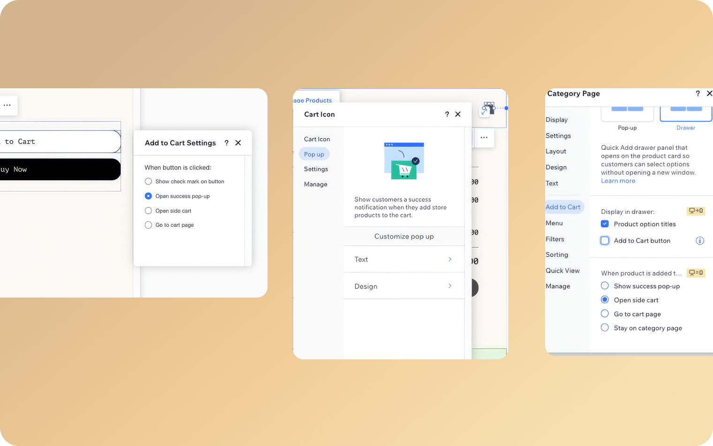
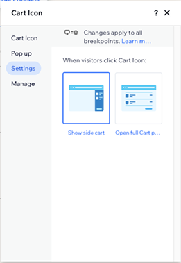
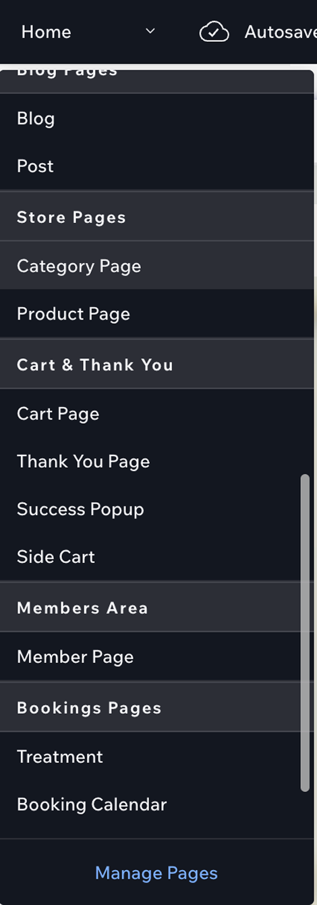
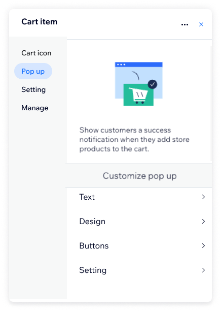

The pop-up shoppers see right after “Add to cart.” I redesigned how store owners set it up and design it.
- Role
- UX/UI Designer
- Team
- PM, developer, architect
- Platform
- Wix eCommerce
- Year
- 2026
- Status
- Shipped
The brief
Part of improving the purchase experience, for shoppers and for the store owners who use Wix. The goal: refresh the Tiny Cart, make it stand out, and add new capabilities, like sales boosters, that help store owners increase their sales.
Starting point
Shoppers reach the Tiny Cart from three places: the cart icon, and the “Add to Cart” button on product and category pages.
Store owners could only design it through the cart icon settings, and had to set its behavior in three different places. Design options were limited: button text, fonts, colors, backgrounds, and styling for the success pop-up. And they designed it without seeing it: there was no preview of the pop-up.

Before: the cart icon settings panelThe problem
- Store owners designed it blind.There was no preview of the pop-up, so they couldn't see what they were designing.
- The settings were scattered.Design lived only in the cart icon settings, and behavior was set in three different places.
- The code was legacy.The Tiny Cart had to be rewritten, which made it the right moment to rethink the whole experience.
The solution
We redesigned the Tiny Cart with its own section in the Editor and improved customization, so store owners edit everything in one place.
Also new: A checkout button, and clearer item and discount display.
Phase 2: Routing per entry point, so store owners choose Side Cart or Tiny Cart for each one, and two sales-booster slots.
Key decision: Where store owners design the Tiny Cart
3 concepts explored

Concept 1Concept 1. Inside the cart icon panel
Store owners choose what happens when shoppers click the cart icon: Side Cart, full cart page, or pop-up.
- Why not
- Editing stays hidden in the cart icon, with no preview of the pop-up.

Concept 2Concept 2. Its own page in the EditorChosen
The pop-up cart appears under Store Pages, right next to the Side Cart.
- Why
- It follows a pattern store owners already know from the Side Cart, gives the Tiny Cart a clear entry point, and opens editing with a live preview. Access from the cart icon stayed, so existing users didn't face a dramatic change.

Concept 3Concept 3. One unified cart panel
A single side panel with tabs for the cart icon, pop-up, settings and management.
- Why not
- Everything in one panel made it crowded, and the pop-up was still reached through the cart.
Editing flow
Step 01. Its own section in the Editor
When Wix Stores is installed, the Tiny Cart gets a dedicated section in the Editor. Editing opens from there.
Step 02. Design panel
Fonts, colors, backgrounds and button styles, with a live preview of the pop-up.
Step 03. Customization panel
What the cart shows: the checkout button, discounts and item details.
Constraints
We planned more design options for the panel, but some were cut due to development constraints. We prioritized by two things: what mattered most to the purchase experience, and what could be rewritten most simply.
Learnings
1. Check what's possible early.Working with the developer and architect showed it's worth understanding the constraints at the start, not after the design is done.
2. Prioritize by impact and effort.When not everything fits, choose what matters most to users and what's simplest to build.
3. Respect existing habits.Keeping the old access point meant the change didn't come at the cost of users who were used to it.